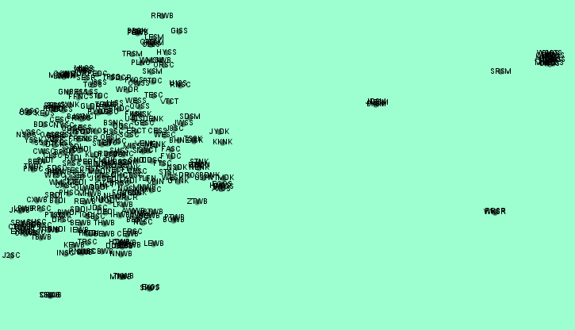

About Me
Hi! My name is Pradyumn Srivastava, and I am passionate about Data. I am a CS Student
who likes to learn different skills. I know Front-end designing, Data Analytics and Visualisation,
Image Segmentation, etc. I like to play the guitar, swim, read and write novels as well.
I like to code, nevertheless I would aim for a Techno-Managerial role in the near future.
Press on any of the icons below to reach out to me!
Abstract
Our Project is on the topic : Student Enrollment Analysis.
Through connectedpapers.com, I found a very interesting paper related to our work.
Click here
Gephi Visualization
The below Visualization was done using
Gephi
The dataset used was of the overall dolphin population in the state of Florida
Interactions are characterized by prey capture or persistent incidents of prey
searching as indicated by long dives or specialized feeding behaviours
with direction shifts between surfacings.
The above data set was taken from Github.com


Netflix Analysis
The Growth of Netflix was a Data Visualization project done and presented on Canva
The dataset used was gathered from Kaggle. It was pre-processed using R software and then visualized using inbuilt functions in R.
Various Inferences were gathered and is explicitly depicted in the presentation below.
The codes and visuzalizations is presented in the repo : Github.com
Click here for the Original Canva Presentation with Interactive Visualizations
Tableau
Crime Rates Data was depicted using Tableau's Visualization tools
Top 2% Scientists Worlwide was a Data Visualization project presented on Canva
The dataset was used from the following website - Click Here!
The raw dataset was pre-processed and cleaned using several techniques. The repo link for codes in given below. Some visualization was also created using Rstudio
Github.com
World’s Top 2% Scientists.pptx by pradyumn srivastava